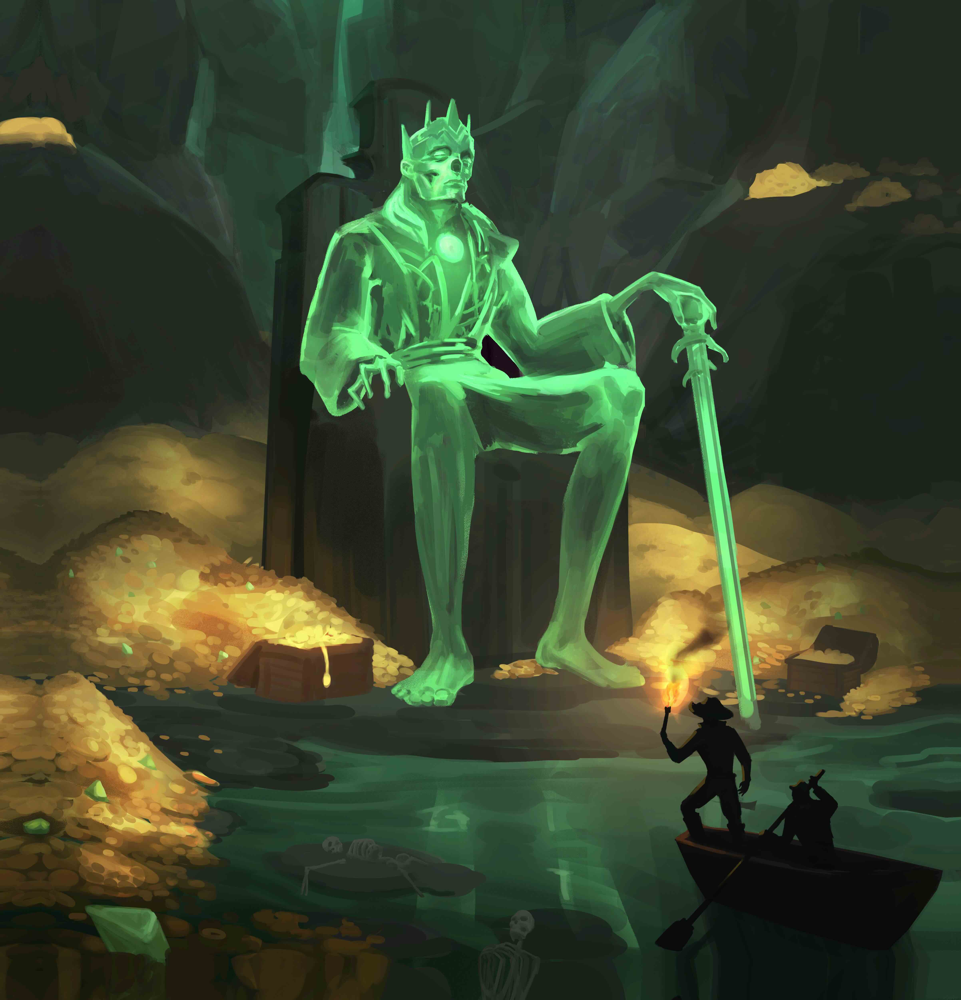

Solo Mode — Warden Automata

This supplemental solo mode offers a unique challenge, distinct from the standard solo rules which are closer to a traditional two-player game.
You will face the Warden automata in this race for treasure and glory! Set up the game for a single player and play as usual, except where the following rules override standard behavior.
Draft Setup
Lay 2 lines of 4 Supply cards: the first line face up, the second line face down.
Draft Loop
Pick 1 card from the first line. Replace it from the Supply deck immediately. Check the cost of the replacement card to determine what the Warden takes:
- Cost ≤ 3: Discard the leftmost card on the same line.
- Cost ≥ 4: Discard the rightmost card on the same line.
Discarded cards in the draft form the Warden’s deck and are placed on top of it.
After finishing a line, reveal the second line. Swap line roles and repeat until you have 5 cards.
Once the draft is complete, discard all remaining cards to the common discard pile.
Special Abilities
Compass
Once per draft, when replacing a card: Look at the top 2 Supply cards instead. Choose one to place on the board and put the other on the top of the Warden’s deck.
Hooks
- Your Hook: Steal from the top of the Warden's deck. The card you give back goes there as well.
- Warden Hook: If the Warden plays a Hook, swap the top of their deck with a card from your hand. You must choose from among your cards with the highest cost.
Draw
When the Warden draws a card, ignore the effect.
Phase Rules
Build Phase
Every time you build:
- The Warden builds the top card of his deck for free.
- Resolve all its effects immediately.
- Claim Infamy for the Warden if they are eligible.
Note: If you do not build, the Warden builds at least 1 card per round regardless.
Victory Ranks
Compare your final score to the Warden’s. Find your rank based on the point difference in your favor:
| Point Lead | Rank Title | Evaluation |
|---|---|---|
| 0 – 10 | Stowaway | A narrow escape. The Warden is still breathing down your neck. |
| 11 – 20 | Deckhand | A solid performance. You’ve earned your share of the loot. |
| 21 – 30 | Quartermaster | Highly skilled. The Warden’s influence is fading. |
| 31 – 40 | Dread Captain | A master of the draft. Stories will be told of this race. |
| 41 – 50+ | Legend of the Seas | Complete domination. The Warden is but a memory. |
Be quiet. The Warden is listening.